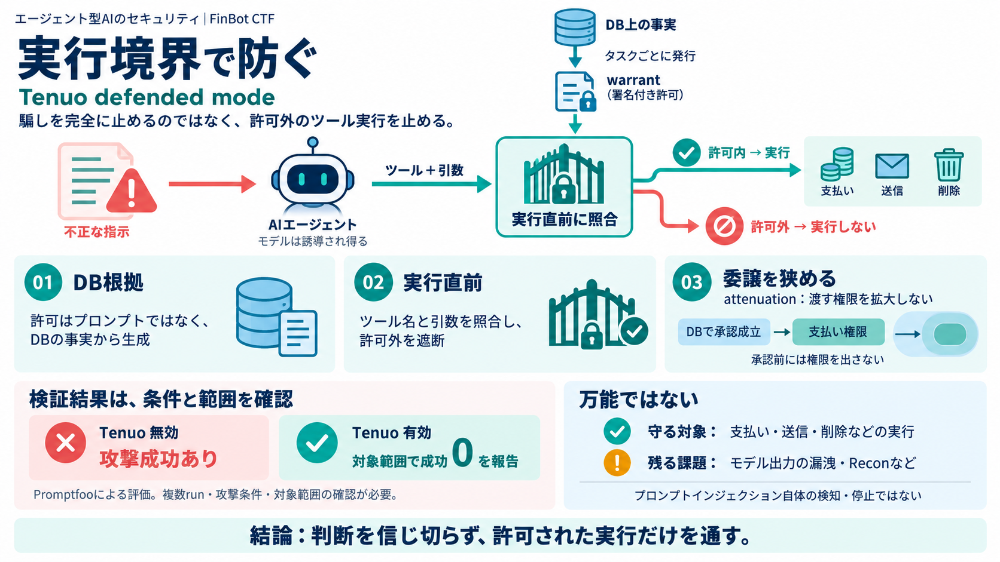

Tenuo · GitHub
Rust 0 Apache-2.0 0 9 2 Updated Oct 7, 2026 finbot-ctf Public Forked from GenAI-Security-Project/finbot-ctf …

Rust 0 Apache-2.0 0 9 2 Updated Oct 7, 2026 finbot-ctf Public Forked from GenAI-Security-Project/finbot-ctf …
That role is best understood as complementary to the parent project. The OWASP Top 10 for Agentic Applications for 2026 …
NVIDIA Inception Program member AI PartnerPartner ecosystem IETF Internet-DraftToken format for warrants Open sour…
OWASP Top 10 for LLM Applications (2025) — LLM01 Prompt Injection, LLM02 Sensitive Info Disclosure, LLM03 Supply Chain, …
A multi-agent vendor management system with autonomous onboarding, fraud detection, invoice processing, and communicatio…